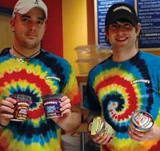

Ben & Jerry's Climate Change Ambassadors
May/June 2006
No one knows better than Ben & Jerry's that 'when it's melted,it's ruined.' Recognizing the need for a new generation of globalwarming activists, the internationally known ice cream company hasteamed up with the WorldWildlife Fund (WWF) and leading polar explorer, MarcCornelissen, to create the Climate Change College.
Six young graduates (ages 18 to 25) of the three-year program willbe fully trained to inspire businesses and citizens to address theissue of climate change. The curriculum is based on the WWF'scampaign for a cleaner power sector,PowerSwitch!,and includes internships at sustainable 'green' businesses,workshops and a trip to the polar region to see the effects ofglobal warming in person.
According to Jerry Greenfield, he and Ben Cohen built their company'on the idea that business has a responsibility to the communityand environment.' In addition to the Climate Change College, thecompany addresses the footprint its ice cream business leaves onthe world. Some of these efforts include composting waste, reducingpaper use, improving the energy efficiency of stores and productionplants and turning ice cream byproducts into chemical-freefertilizer. Furthermore, the milk that goes into each flavor comesfrom cows that haven't been treated with artificial growthhormones.
The owners also use the power of their decisions 'to help drivesocial change.' Ben & Jerry's pays a premium price for itsingredients, such as cocoa, vanilla and coffee, to suppliers infarmer-run cooperatives. This economic model ensures profits forthose who produce the food.
And when Ben & Jerry's can't find alternatives to harmfulbusiness practices, it just invents them. In 1998, the companybecame the first frozen food manufacturer to use unbleachedpaperboard containers, which they named 'Eco-Pints.'
To read about Ben & Jerry's other climate change initiatives,check out their campaign Web site,Lick GlobalWarming, or read more about theClimate ChangeCollege.
|
 Josh Martin and Jake Jones, two Ben & Jerry's employees in Lawrence, Kan., show off their favorite flavors ? packaged in 'Eco-Pints.' |
 Josh Martin and Jake Jones, two Ben & Jerry's employees in Lawrence, Kan., show off their favorite flavors ? packaged in 'Eco-Pints.' |
|